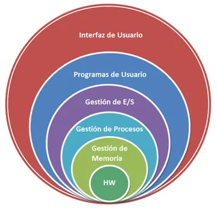

(Actualizado el 17/09/2024)
2. Conceptos Generales de los Sistemas Operativos (SO)
2.1. ¿Qué es un Sistema Operativo (SO)?
Un Sistema Operativo (SO) es el software principal que gestiona el hardware de un ordenador o dispositivo móvil y permite la ejecución de aplicaciones. Actúa como un intermediario entre el hardware y el usuario, gestionando todos los recursos del sistema, como el procesador, la memoria y los dispositivos de entrada/salida.

Funciones principales de un SO:
- Gestión de procesos: Controla la creación, ejecución y finalización de procesos (programas en ejecución).
- Gestión de memoria: Asigna y libera memoria RAM según las necesidades de los programas.
- Gestión de almacenamiento: Organiza y gestiona el acceso a los archivos en dispositivos de almacenamiento como discos duros y SSDs.
- Gestión de dispositivos: Facilita la comunicación entre el hardware y los programas, permitiendo que dispositivos como impresoras o tarjetas gráficas funcionen correctamente.
- Interfaz de usuario: Permite que los usuarios interactúen con el sistema mediante una Interfaz gráfica de usuario (GUI) o una Interfaz de línea de comandos (CLI).
- Seguridad y control de acceso: Protege el sistema contra accesos no autorizados y garantiza la integridad de los datos.
2.2. Tipos de Sistemas Operativos
Los sistemas operativos se adaptan a diferentes tipos de dispositivos y usos, lo que los clasifica en varios tipos:
2.2.1. Sistemas Operativos de propósito general
- Windows: Muy popular en ordenadores personales y usado en empresas.
- macOS: Sistema operativo de Apple, conocido por su interfaz intuitiva y alta integración con hardware Apple.
- Linux: Sistema operativo de código abierto, conocido por su flexibilidad y seguridad, ampliamente utilizado en servidores y sistemas embebidos.
2.2.2. Sistemas Operativos en tiempo real (RTOS)
- Diseñados para responder a eventos en tiempo real, utilizados en sistemas críticos como automóviles, robots, y sistemas industriales.
- Ejemplos: FreeRTOS, VxWorks.
2.2.3. Sistemas Operativos de red
- Optimizados para gestionar los recursos y servicios en una red de ordenadores, permitiendo el acceso compartido a recursos como archivos y aplicaciones.
- Ejemplos: Windows Server, Unix.
2.2.4. Sistemas Operativos distribuidos
- Se encargan de gestionar un grupo de ordenadores conectados para que funcionen como un solo sistema, lo que permite el procesamiento distribuido de tareas.
- Ejemplos: Google File System (GFS), Apache Hadoop.
2.2.5. Sistemas Operativos móviles
- Diseñados para dispositivos móviles, optimizados para eficiencia energética y para funcionar en pantallas táctiles.
- Ejemplos: Android, iOS.
2.3. Classificación de los S.O.
Por número de usuarios:
- Monousuario: Un único usuario en el ordenador en un momento dado.
- Multiusuario: Varios usuarios en el ordenador.
Por número de procesos:
- Monotasca: Solo procesa una tarea en un instante dado.
- Multitasca: Varias tareas simultáneamente
Por tipo de Licencia:
- Propietario: Licencia de código cerrado. Ejemplo: Microsoft Windows.
- Libre: Licencia de código abierto. Ejemplo: Ubuntu.
2.4. Elementos de un Sistema Operativo
Un SO está compuesto por varios elementos que trabajan en conjunto para permitir su funcionamiento eficiente. Algunos de estos elementos son:
2.4.1. Núcleo (Kernel)
Es la parte más fundamental del SO y se encarga de gestionar el hardware del sistema. Sus funciones incluyen la gestión de procesos, la memoria y los dispositivos de entrada/salida.
- Núcleo monolítico: Todos los servicios del SO están integrados en un único programa que se ejecuta en modo núcleo. Ejemplo: Linux.
- Microkernel: Solo las funciones esenciales están en el núcleo, mientras que otros servicios (como la gestión de archivos) se ejecutan fuera del núcleo. Ejemplo: MINIX.
2.4.2. Gestor de procesos
Este componente se encarga de crear, planificar y terminar procesos. También administra los hilos, que son unidades de ejecución más pequeñas dentro de un proceso.
2.4.3. Gestor de memoria
Administra tanto la memoria física (RAM) como la memoria virtual. Se asegura de que los procesos tengan el espacio necesario para ejecutarse sin interferencias.
2.4.4. Sistema de archivos
Controla cómo se almacenan y organizan los datos en los dispositivos de almacenamiento. Los sistemas de archivos populares incluyen:
- FAT32, NTFS: Usados en sistemas Windows.
- ext4: Común en sistemas Linux.
- APFS: Usado en macOS y iOS.
2.4.5. Gestor de dispositivos
Facilita la interacción entre los controladores de hardware (drivers) y el software del sistema. Permite que dispositivos como discos duros, impresoras y monitores funcionen adecuadamente.
2.4.6. Interfaz de usuario (UI)
Existen dos tipos principales de interfaces:
- Interfaz gráfica de usuario (GUI): Permite a los usuarios interactuar visualmente con el SO mediante ventanas, iconos y menús. Ejemplo: Windows, macOS.
- Interfaz de línea de comandos (CLI): Permite a los usuarios ejecutar comandos de texto para interactuar con el SO. Ejemplo: Bash en Linux, PowerShell en Windows.

2.5. Estructura de un Sistema Operativo
La estructura de un SO define cómo están organizados sus componentes y cómo interactúan entre ellos. Las estructuras más comunes son:
2.5.1. Estructura monolítica
- En este modelo, todos los servicios del sistema operativo, como la gestión de procesos, la memoria y los dispositivos, están integrados en el núcleo.
- Ventaja: Alta eficiencia.
- Desventaja: Difícil de mantener y modificar.
2.5.2. Microkernel
- Divide el núcleo en partes más pequeñas, donde solo las funciones esenciales (como la gestión de la memoria y los procesos) se ejecutan en modo núcleo. Las demás funciones, como el sistema de archivos y los drivers, se ejecutan fuera del núcleo.
- Ventaja: Mayor seguridad y estabilidad, ya que una falla en un componente no afecta al núcleo.
- Desventaja: Puede ser menos eficiente que un núcleo monolítico.
2.5.3. Sistemas por capas
- El sistema operativo se organiza en capas, donde cada capa superior depende de los servicios proporcionados por la capa inferior.
- Ventaja: Modularidad, lo que facilita el mantenimiento.
- Desventaja: La comunicación entre capas puede agregar complejidad y ralentizar el rendimiento.

2.5.4. Máquinas virtuales
- El sistema operativo puede crear máquinas virtuales que actúan como si fueran ordenadores físicos, lo que permite ejecutar múltiples sistemas operativos en un solo equipo.
- Ventaja: Flexibilidad, especialmente útil para pruebas y desarrollo.
- Desventaja: Consume más recursos, ya que cada máquina virtual necesita su propia asignación de memoria y CPU.
2.6. Conceptos Clave en la Gestión de Recursos
2.6.1. Procesos e Hilos
- Proceso: Es un programa en ejecución, y cada proceso puede tener uno o más hilos.
- Hilo: Es una subunidad de un proceso que permite la ejecución concurrente dentro del proceso.
2.6.2. Planificación de Procesos
El SO utiliza algoritmos para determinar qué proceso debe ejecutarse y en qué momento:
- FIFO (First In, First Out): Los procesos se ejecutan en el orden en el que llegan.
- Round Robin: Cada proceso recibe una cantidad de tiempo fija (cuanto de tiempo) para ejecutarse, y luego le cede el control a otro proceso.
- Planificación basada en prioridad: Los procesos con mayor prioridad se ejecutan primero.
2.6.3. Gestión de Memoria
La memoria es un recurso limitado que debe gestionarse cuidadosamente para evitar conflictos entre procesos.
- Memoria virtual: Permite que los procesos utilicen más memoria de la disponible físicamente al emplear el disco duro como memoria adicional.
- Paginación: Divide la memoria en bloques de tamaño fijo llamados páginas, lo que permite que el SO asigne memoria de manera más eficiente.
- Segmentación: Divide la memoria en segmentos de diferentes tamaños según las necesidades del programa.
2.7. Seguridad en los Sistemas Operativos
La seguridad en los SO es esencial para proteger los datos y garantizar el correcto funcionamiento del sistema:
- Control de acceso: Los usuarios tienen permisos para acceder solo a ciertas partes del sistema.
- Cifrado de datos: Protege los datos almacenados en el disco para evitar accesos no autorizados.
- Autenticación de usuarios: El SO gestiona diferentes niveles de acceso para usuarios y administradores.
- Auditoría y monitoreo: Registra los eventos y acciones del sistema para detectar comportamientos sospechosos.